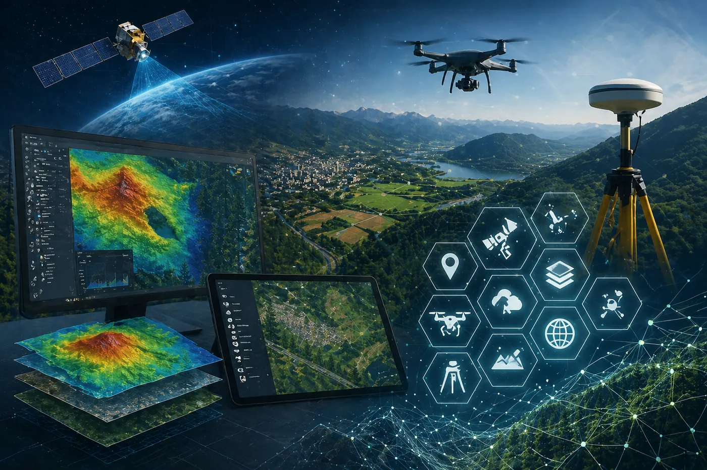

Sensoriamento remoto
Leitura de comportamento territorial com dados orbitais e modelagem analítica.
A Avant aplica geotecnologia de forma prática para unir imagens, terreno, índices espectrais, vetorização, monitoramento multitemporal e automação geoespacial com foco em resultado operacional.

O objetivo é transformar imagens e camadas geográficas em material confiável para diagnóstico, acompanhamento e decisão.
Leitura de comportamento territorial com dados orbitais e modelagem analítica.
Levantamento de alta resolução para ortomosaicos, inspeção e análise de detalhe.
Monitoramento amplo, recorrente e útil para grandes áreas e comparações temporais.
Processamento escalável de grandes volumes de dados geoespaciais.
Índices espectrais para leitura de vigor, água, biomassa e resposta da cobertura.
Leitura de relevo, declividade, superfície e apoio ao planejamento operacional.
Base visual de alta precisão para análise, contagem, inspeção e mapeamento.
Comparação entre datas para entender evolução, anomalias e mudança de comportamento.
Produtos cartográficos para comunicação técnica e apoio a decisões em diferentes níveis.
Rotinas automatizadas para consolidar, transformar e analisar dados espaciais.